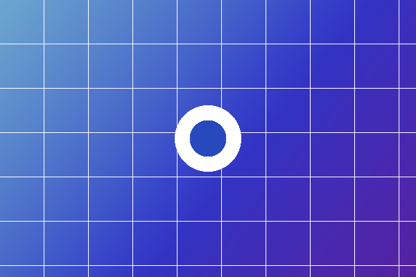
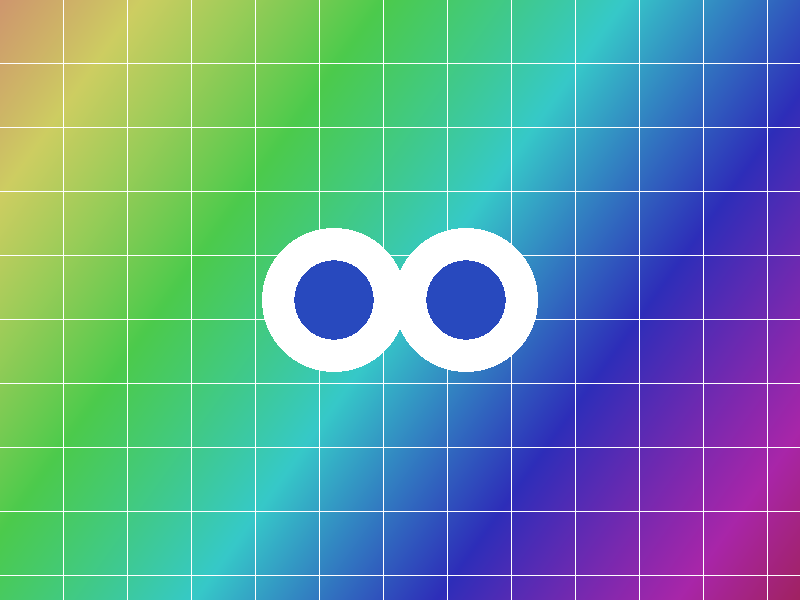
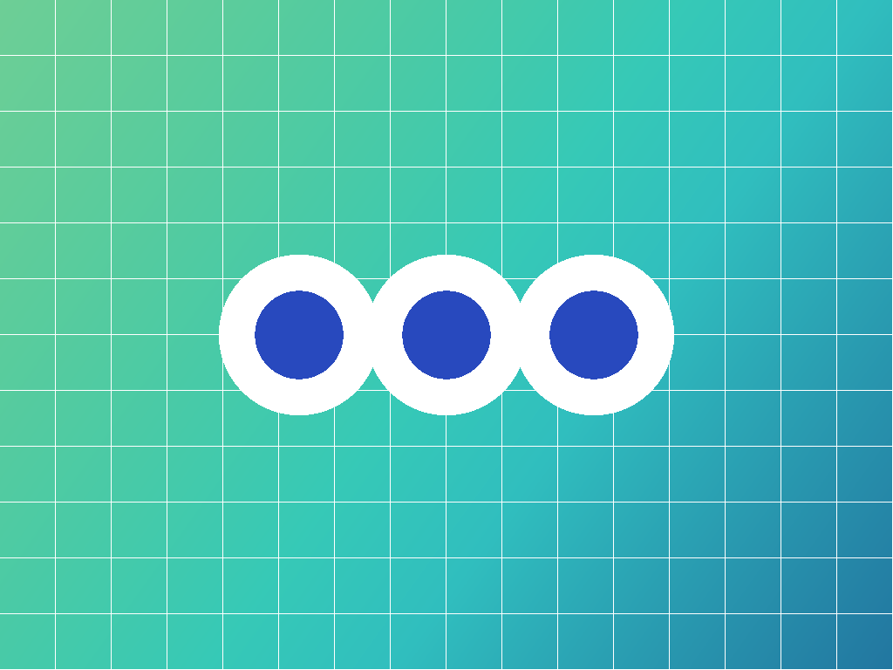
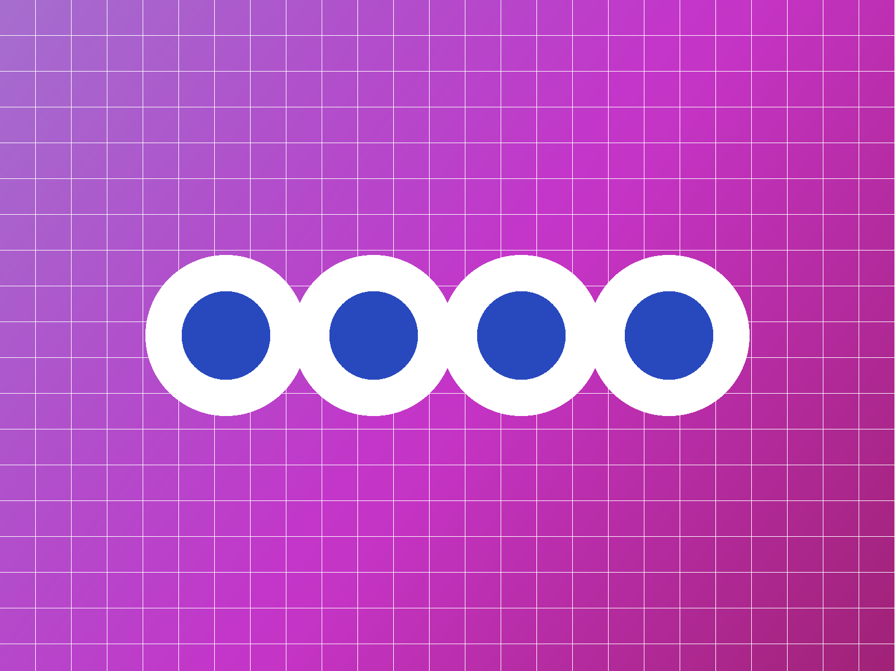
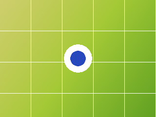
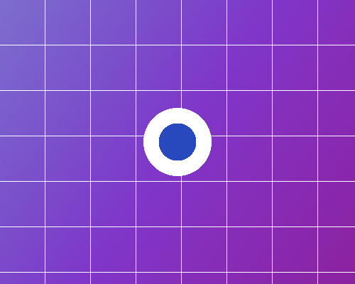
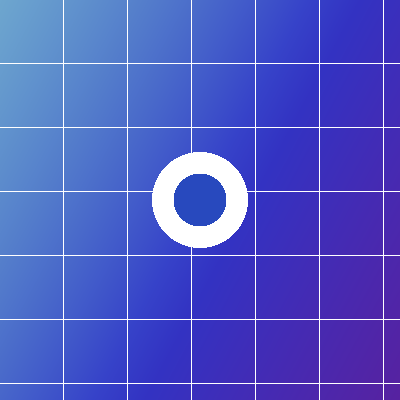
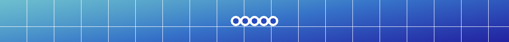

图提取 ImageGrab · 本地测试页
这一页不依赖任何电商网站，用来验证提取逻辑：扫描范围、原图还原、去重、过滤规则、转 PNG 与批量下载。
当前是
file:// 打开，content script 不会注入。请用本地服务器访问：
python -m http.server 8000 后打开
http://localhost:8000/test/test-page.html。
没有检测到 ImageGrab 面板。请确认：① 已在
chrome://extensions 加载本扩展；
② 通过 http://localhost:8000/... 访问本页；③ 点击扩展的刷新按钮后重载本页。
已检测到 ImageGrab 面板：点击页面右下角的「获取图片」开始测试。
1. 预期结果（对照检查）
| 场景 | 测试资源 | 预期行为 |
|---|---|---|
| 普通图片 | photo-a / photo-b / photo-c / photo-large | 全部保留，尺寸与真实像素一致 |
| srcset 与 picture | srcset-large.png（最大候选）、srcset-small.png | 只保留最大候选，小图不再单独出现 |
| 懒加载 | lazy-one.png / lazy-two.png（data-src） | 开启「扫描前自动滚动」后能被收集到 |
| 背景图 | bg-hero.png（内联 style）、bg-tile.png（CSS 类） | 两种背景图都要被收集 |
| 重复图片 | photo-dup.png 出现两次；photo-a_400x400.png 与 photo-a.png | 只保留 1 条，且缩略图被还原成 photo-a.png |
| 小尺寸 / 占位 | photo-small.png（40×40）、spacer-1x1.png、1×1 GIF、SVG data 图 | 全部被过滤（尺寸过小 / 1x1 / 占位 data 图） |
| 图标与装饰 | logo-site.png、页眉里的 lazy-two.png、页脚里的 photo-footer.png | 被过滤（URL 黑名单 / 装饰区域） |
| 细长条 | banner-wide.png（1200×100） | 被过滤（长宽比异常） |
| 404 图片 | missing-on-purpose.png（故意不存在） | 出现在列表但无法预览，下载时失败并给出原因 |
| 无 CORS 的跨域图 | http://127.0.0.1:8001/no-cors.png | 扩展直连与页内回退都受限 → 按原格式降级下载 |
| 同源 iframe | frame-image.png（在 test-frame.html 里） | 递归扫描同源 iframe，图片被收集 |
| Shadow DOM | shadow-image.png（自定义元素的 shadow root 内） | 递归下钻 shadowRoot，图片被收集 |
目标数量：结果页应显示 14 张 图片（其中 1 张 404、1 张无 CORS 会在下载阶段给出失败/降级反馈）。
2. 普通图片




顺带测一下 a[href] 收集：这张图已经被上面收集过，预期会算作重复。

3. srcset 与 picture

4. 懒加载（data-src）
这两张图在滚动到可视区域前不会被赋值给 src，用来验证「扫描前自动滚动」预热。


5. 背景图
内联 style 的 background-image（bg-hero.png · 900×300）
CSS 类里的 background-image（bg-tile.png · 600×200）
6. 重复图片


7. 应该被过滤掉的图片


8. 失败场景


node test/no-cors-server.mjs
9. 同源 iframe 与 Shadow DOM
跨域 iframe 属于浏览器安全边界，明确不处理；同源 iframe 与 shadowRoot 会递归扫描。